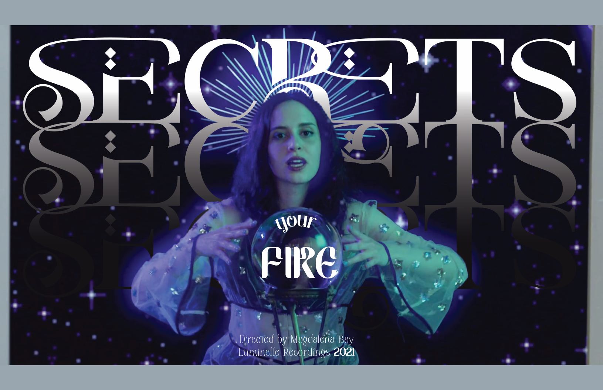
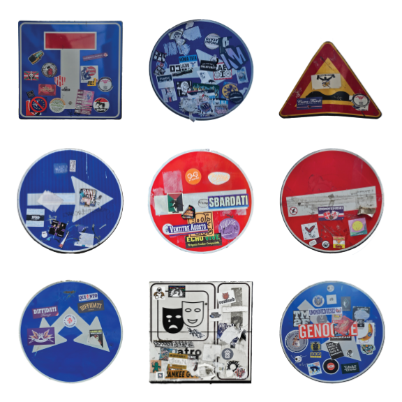

Modern History
Modern HistorySUA 25
Grate Posters
SUA 25
SUA 25
 Identity Zine
Identity ZineMulti Studio
 "U R WHAT U EAT"
"U R WHAT U EAT"PHTO elective
 folded out view.jpg) "Take a slice"
"Take a slice"PHTO elective
 500-page book
500-page bookCore Studio II

Title Cards & Animation
Core Studio I
Core Studio I
 WORMS doers, movers, shakers
WORMS doers, movers, shakers
 Pretty Potions
Pretty Potions
 Cultural melting pot
Cultural melting pot
Hello!! My name is Kara, and I'm a Junior majoring in Graphic Design at VCU.
I really like to design posters, and have been into site design as of recent; I actually hand-coded this entire website! I don't really have a specific design aesthetic, but I like to explore systems in my work, which you will see through (or in suggestion to) continuity to other projects.
Enjoy perusing!
I really like to design posters, and have been into site design as of recent; I actually hand-coded this entire website! I don't really have a specific design aesthetic, but I like to explore systems in my work, which you will see through (or in suggestion to) continuity to other projects.
Enjoy perusing!
Like what you see? Get in touch!
Phone #: (+1) 865-441-3124
Email: faulknerk2@vcu.edu
Phone #: (+1) 865-441-3124
Email: faulknerk2@vcu.edu

I created this whilst studying abroad in Italy with the VCU Graphic Design program from May-June 2025. We were tasked with observing the city and creating designs inspired by what we saw, so I made "Modern History": an insight into modern day systems that are commonly overlooked for their consistent presence in our lives until they, too, become "history." I chose to represent the idea of a "modern history" with the unique nature of Italian street signs, which were covered in stickers, playing with the idea of the signs themselves being scraped off and cleaned but their history (the stickers) remaining a part of their "lives."
These were also created during my May-June studies in Italy with the VCU Graphic Design program. I created two custom screenprints of a collection of historical wall-integrated vent systems I found across my travels that I outlined in Illustrator and assembled into a pattern. I printed these on textured paper to emulate the walls in the showcase room, printing one with a faulty screen I had created to emulate the ancient broken walls found across Italy to play into its historical background. The screenprint files are featured on the PDF to the left.
We were required to create a zine, or some kind of publication, that talked about our identities in some way to act as a "leave-behind" for people who wanted to get to know us better; kinda like a business card, but more artsy. I took a few weeks to make a zine that I believed refleccted my personality/ identity, making it resemble a laptop/ desktop because I'm online more often than not; so capturing that digital identity. (I made a zine capturing that digital identity). On the back, I added a magenta background and in front of that collaged some text from the front of the zine.
-
EASTER EGGS:
- text created from screenshots of meme text and assembled/ collaged
- the original project had sticky notes with qr codes pasted on them that lead to a TECHNOCORE music playlist.
- the text on the back uses the same method as the front text to assemble the landing page to my portfolio, that you could plug into VScode or another text editor to get my landing page. It was completed with a google doc on instructions to use text editors to code the page (which you can actually click from here!).
This project was created for my PHTO bookmaking class' stitch book assignment. The prompt for this book was "Portrait of One Person", which I interpreted as the saying "you are what you eat"- a visualization of myself as a college student on a meal plan who occasionally splurges for the good stuff. I convey the nuances of a healthy taste in food with the brands of products I use, featuring organic labels and quality ingredients. The photographs featured in the book have been digitally altered using Photoshop to give them a brighter appearance and play into the notion that they're being lit with a fridge light.
 FINAL-1.jpg)
This absolute behemoth was created in the last month of my Sophomore year, in Core Studio 2. This was an assignment to create a 500-page book on the topic of "speculative worlds," looking into the past, present, and future of our topic. I chose to research "Beauty," exploring concepts of beauty standards between women and men throughout history. I also incorporated a bit of a fashion perspective, but my focus was primarily on beauty and its evolution to more synthetic appearances in the present day.
I started from the beginning of time because I wanted to delve into attraction and appearances at a fundamental level, then I worked through the most pertinent centuries and eras in beauty (Greece, Rome, 14th, 15th, 16th centuries), and finally from the late 1800s- present day by the decade. For the speculative portion, I explored AI in beauty as it's being used today, and how its role can also can evolve in the future.
I used mirror paper for the cover, drawing on it in lipstick; this decision was inspired by bathroom medicine cabinets, which are typically used to store a myriad of beautification products.
I started from the beginning of time because I wanted to delve into attraction and appearances at a fundamental level, then I worked through the most pertinent centuries and eras in beauty (Greece, Rome, 14th, 15th, 16th centuries), and finally from the late 1800s- present day by the decade. For the speculative portion, I explored AI in beauty as it's being used today, and how its role can also can evolve in the future.
I used mirror paper for the cover, drawing on it in lipstick; this decision was inspired by bathroom medicine cabinets, which are typically used to store a myriad of beautification products.
For this assignment, we had to create 3 title cards from 3 screenshots of a music video. I chose Magdalena Bay's "Secrets: Your Fire", and used this assignment as a method to test my flexibility in design thinking. We were also tasked with creating a short animation using one of our 3 title cards in Adobe AfterEffects; I chose the first in the series, which you can watch by clicking on the link provided below.
WATCH HERE!!
WATCH HERE!!
Kara Faulkner
EDUCATIONThe Webb School of Knoxville
2019-2023
4.1 GPA
VCU GDES BFA, Marketing minor
2023-2027
3.7 GPA
SRISA International School of the Arts
5/2025-6/2025
EXTRACURRICULARS
volunteering
In Richmond, I commonly volunteer with organizations “Help the Unhoused” and “RISE against hunger,” and dabble in volunteering within the Transform program.
school organizations
I was a member of the LiveWell LLC and VCU CHAARG fitness program, as well as miscellaneous clubs including web development, OpenFigure, and the Risograph club. I am a member of the Honors College and have completed my first semester of VCU Transform, a 2-year leadership program steeped heavily in community work and collaboration.
WORK EXPERIENCE
ArtXtravaganza showcase
2022-2023
I was a featured Artist in my High school’s student showcase for two consecutive years, featuring pieces created both in and outside of my art classes. Additionally, I tabled at a live drawing panel with fellow student artists.
KARM stores- Oak Ridge branch
7/2023 - 8/2023
I worked as a sales associate the month before my first semester of college. Responsibilities included stocking shelves with donations and organizing them according to store policies, helping customers find items, pulling unsold merchandise, and occasionally refreshing store displays.
SPUKHAUS student show - the Anderson
10/2023
I created a piece representative of the theme “torture” for the AFO student showcase at the Anderson, comprised of a charcoal drawing of me receiving surgery without anaesthetic.
OfficeDepot OfficeMax - Turkey Creek pavillion
7/2024 - Present
I worked as a sales associate/ cashier, primarily manning the registers. Responsibilities included assisting customers with finding items in-store and picking up online orders, product assembly, stocking shelves, and securing products for purchase. I assumed additional responsibilities as a member of closing staff, and occasionally assisted at the print center with tasks such as laminations and canvas wraps.
EXPERTISE
- Adobe suite
- Photoshop
- Illustrator
- InDesign
- After Effects
- Premiere Pro
- HTML
- CSS
- Javascript
- Jquery
SKILLS
- Frontend web design
- Layout and typography
- Color theory
- Organization
- Adaptability
- Critical thinking and problem resolution
- Time management
- Detail-oriented
AWARDS
- Outstanding bill award - YIG, 2022
- Winner of 2023 Webb bookmark competition
- Dean’s list Spring 2025
- Google analytics certification, 2025